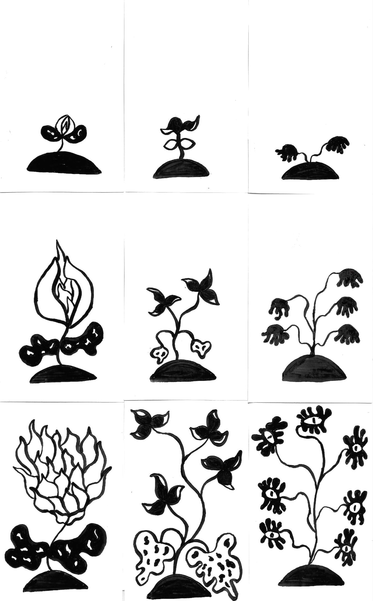
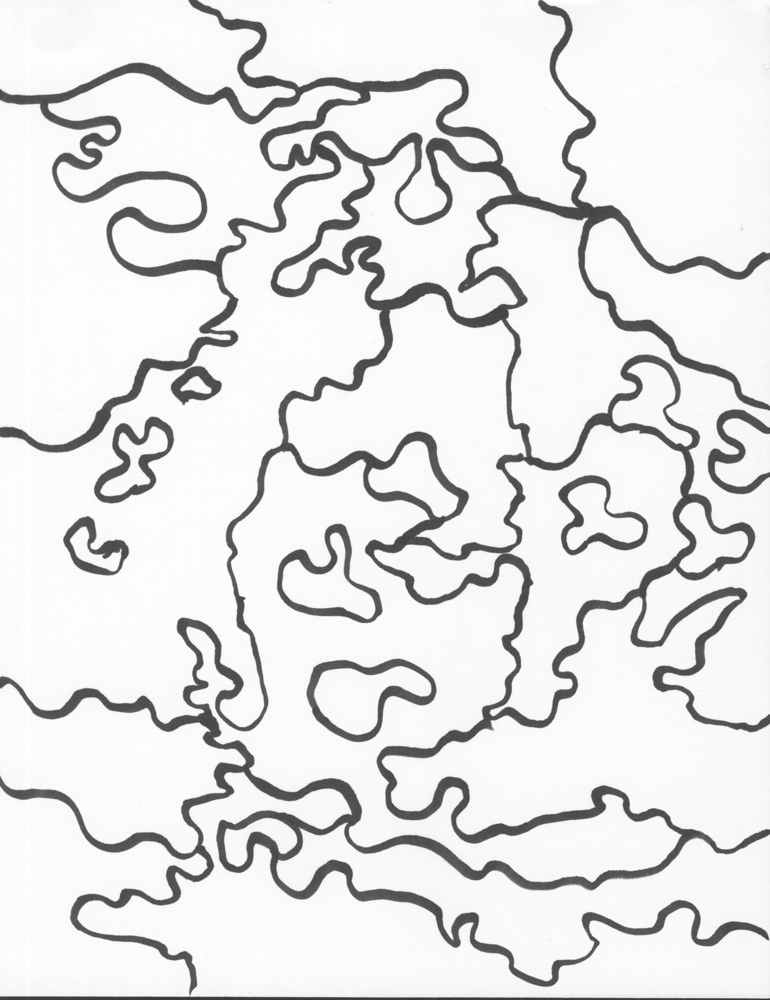

The Wicked Woods
Fall 2023, Gameplay Designer, Layout Designer, Artist
The Wicked Woods is a writing game where the player must respond to prompts in order to grow the plants native to their woods. As the woods grow, the borders within it fluxuate, with an old border dissappearing and a new boarder appearing every turn. While the prompts themselves can be addressed in character or out of character, players are encouranged to document the fictional history of the woods as it changes over the course of the game.
For this game, I practiced creating writing prompts. I also practiced designing unique 'characters' that progressed over time through the plants in game. I really liked working with text as a visual object by asking players to write on the map itself and to follow its irregular curves. In playtesting, the act of whiting out sections of the map was also found to be pleasing in and of itself, which helped to lean into the game's original core idea that destruction and creation are both necessary. Although I leaned back on that idea in the final iteration, I think it as a base helped to curate the thoughtful and calm mood I was going for overall.
Download the game on Itch.io: https://aliatothsmith.itch.io/the-wicked-woods
Made for ARTG 170-02 taught by dani wright
|  |
|  |